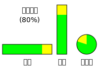

~UAには、~HTML文書を特定0の仕方で呈示することは要求されていない。
しかしながら，この節は、~HTML文書を具現化するための，一群の`示唆^em（ `suggestion^en ）を供する
— それに従えば、およそ，文書~作者が意図する体験に近い利用者~体験へ導くものと~~見込まれるような。
この節では、この体験へ導くような挙動を指示するため
— 規範性に関する混同を避けるため，
“〜するモノトスル（ `must^en ）”
は利用しない代わりに —
用語
“`期待される^em（ `expected^en ）”
が利用される。
適合性の目的においては、
示唆された既定の具現化を~supportするものと指名された~UA
に対しては、この節における用語
“期待される”
には，
“〜するモノトスル（ `must^en ）”
と同じ適合性が含意される。
◎
User agents are not required to present HTML documents in any particular way. However, this section provides a set of suggestions for rendering HTML documents that, if followed, are likely to lead to a user experience that closely resembles the experience intended by the documents' authors. So as to avoid confusion regarding the normativity of this section, "must" has not been used. Instead, the term "expected" is used to indicate behavior that will lead to this experience. For the purposes of conformance for user agents designated as supporting the suggested default rendering, the term "expected" in this section has the same conformance implications as "must".
【
“期待される” 対象は常に~UAなので、この訳では，その文脈における語~UAは省略する。
】
【！“~~示唆” という用語は、実際には，より義務的な意味合いも孕むであろう。】
14.1. 序論
一般に、~UAには，~CSSを~supportすることが期待され、この節における示唆の多くは， ~CSS用語で表出される。
他の仕組みによる呈示を利用する~UAは、この節に与えられる~CSS規則を翻訳することにより，期待される挙動を導出できる。
◎
In general, user agents are expected to support CSS, and many of the suggestions in this section are expressed in CSS terms. User agents that use other presentation mechanisms can derive their expected behavior by translating from the CSS rules given in this section.
逆に，~style層の規則（例： 作者~stylesheet）が無い下では、［
要素が，この仕様に述べる意味を`表現-$している
］ことが利用者に判るように，要素を具現化することが~UAに期待される。
◎
In the absence of style-layer rules to the contrary (e.g. author style sheets), user agents are expected to render an element so that it conveys to the user the meaning that the element represents, as described by this specification.
この節における各~示唆は、一般に，［
視覚的な出力~媒体は，96dpi 以上の解像度を伴う
］ものと見做しているが、~HTMLは，~~多様な媒体に適用されるものと意図されている（それは，`媒体に依存しない^em言語である）。
~UAの実装者には、この節における各~示唆を，~~目的の媒体に適応させることが奨励される。
◎
The suggestions in this section generally assume a visual output medium with a resolution of 96dpi or greater, but HTML is intended to apply to multiple media (it is a media-independent language). User agent implementers are encouraged to adapt the suggestions in this section to their target media.
何らかの［
~CSS~layout~box ／
~SVG~layout~box ／
他の~style付け言語による何らかの等価物
］が結付けられている要素は、
`具現化されて@
いる（ `being rendered^en ）とされる。
◎
An element is being rendered if it has any associated CSS layout boxes, SVG layout boxes, or some equivalent in other styling languages.
注記：
~screen外にあるだけでは、要素は`具現化されて$いないことにはならない。
また， `hidden$a 属性が在ることは、通常は，要素は`具現化されて$いないことを意味するが、これは~stylesheetにより上書きされ得る。
◎
Just being off-screen does not mean the element is not being rendered. The presence of the hidden attribute normally means the element is not being rendered, though this might be overridden by the style sheets.
要素は、次を満たす間は
`表示域に交差して@
いるとされる
⇒
［
`具現化されて$いる
］~AND［
要素に結付けられている~CSS~layout~boxは`表示域$に交差している
］
◎
An element is said to intersect the viewport when it is being rendered and its associated CSS layout box intersects the viewport.
注記：
この仕様は、交差がいつ~testされるかについて，精確な時機は定義しないが、その時機は
`Intersection Observer API^cite のそれに合致することが示唆される。
`INTERSECTIONOBSERVER$r
◎
This specification does not define the precise timing for when the intersection is tested, but it is suggested that the timing match that of the Intersection Observer API. [INTERSECTIONOBSERVER]
`作者~level$の~CSS~stylesheetを尊守しない~UAは、それでも，以下の各~節に与えられる~CSS規則を［
この仕様と，関連な~CSS, ~Unicode仕様に整合な方式
］で適用したかのように動作することが期待される。
`CSS$r `UNICODE$r `BIDI$r
◎
User agents that do not honor author-level CSS style sheets are nonetheless expected to act as if they applied the CSS rules given in these sections in a manner consistent with this specification and the relevant CSS and Unicode specifications. [CSS] [UNICODE] [BIDI]
注記：
これはとりわけ ［
`display$p,
`unicode-bidi$p,
`direction$p
］~propに関係している課題に重要である。
◎
This is especially important for issues relating to the 'display', 'unicode-bidi', and 'direction' properties.
以下の各~節に与えられる~CSS規則は、他から指定されない限り，
`~HTML要素$を包含するすべての文書~用に，`~UA~level$の既定の~stylesheetの一部として利用することが期待される。
◎
The CSS rules given in these subsections are, except where otherwise specified, expected to be used as part of the user-agent level style sheet defaults for all documents that contain HTML elements.
規則のうち一部のものは、~CSS~cascadeにおける
`呈示hint@
— `作者~level$の, `詳細度$~zeroの規則 —
になるものとして意図されている。
◎
Some rules are intended for the author-level zero-specificity presentational hints part of the CSS cascade; these are explicitly called out as presentational hints.
所与の %値 を
`~pixel長さに変換する@
ときは
⇒
%値 を`負でない整数として構文解析-$した結果に応じて次を返す
⇒＃
`失敗^i ならば ε ／
~ELSE_ `~pixel単位$による結果
◎
When the text below says that an attribute attribute on an element element maps to the pixel length property (or properties) properties, it means that if element has an attribute attribute set, and parsing that attribute's value using the rules for parsing non-negative integers doesn't generate an error, then the user agent is expected to use the parsed value as a pixel length for a presentational hint for properties.
所与の %値 を
`寸法に変換する@
ときは
⇒
%値 を`寸法~値として構文解析-$した結果に応じて次を返す
⇒＃
`失敗^i ならば ε ／
~ELSE_ 結果の種別に応じて⇒＃
`長さ^i ならば 結果を`~pixel単位$に換算した結果 ／
`百分率^i ならば 百分率~値としての結果
◎
When the text below says that an attribute attribute on an element element maps to the dimension property (or properties) properties, it means that if element has an attribute attribute set, and parsing that attribute's value using the rules for parsing dimension values doesn't generate an error, then the user agent is expected to use the parsed dimension as the value for a presentational hint for properties, with the value given as a pixel length if the dimension was a length, and with the value given as a percentage if the dimension was a percentage.
所与の %値 を
`~zeroは無視しつつ寸法に変換する@
ときは
⇒
%値 を`非~zero寸法~値として構文解析-$した結果に応じて次を返す
⇒
`失敗^i ならば ε ／
~ELSE_ 結果の種別に応じて
⇒＃
`長さ^i ならば 結果を`~pixel単位$に換算した結果 ／
`百分率^i ならば 百分率~値としての結果
◎
When the text below says that an attribute attribute on an element element maps to the dimension property (ignoring zero) (or properties) properties, it means that if element has an attribute attribute set, and parsing that attribute's value using the rules for parsing nonzero dimension values doesn't generate an error, then the user agent is expected to use the parsed dimension as the value for a presentational hint for properties, with the value given as a pixel length if the dimension was a length, and with the value given as a percentage if the dimension was a percentage.
◎
When a user agent is to align descendants of a node, the user agent is expected to align only those descendants that have both their 'margin-inline-start' and 'margin-inline-end' properties computing to a value other than 'auto', that are over-constrained and that have one of those two margins with a used value forced to a greater value, and that do not themselves have an applicable align attribute. When multiple elements are to align a particular descendant, the most deeply nested such element is expected to override the others. Aligned elements are expected to be aligned by having the used values of their margins on the line-left and line-right sides be set accordingly. [CSSLOGICAL] [CSSWM]
◎
For each property in the table below, given a body element, the first attribute that exists maps to the pixel length property on the body element. If none of the attributes for a property are found, or if the value of the attribute that was found cannot be parsed successfully, then a default value of 8px is expected to be used for that property instead.
~prop
~source
`margin-top$p
`body^e 要素の `marginheight$A 属性
◎
The body element's marginheight attribute
`body^e 要素の `topmargin$A 属性
◎
The body element's topmargin attribute
`body^e 要素の`容器~frame要素$の `marginheight$iframe 属性
◎
The body element's container frame element's marginheight attribute
`margin-right$p
`body^e 要素の `marginwidth$A 属性
◎
The body element's marginwidth attribute
`body^e 要素の `rightmargin$A 属性
◎
The body element's rightmargin attribute
`body^e 要素の`容器~frame要素$の `marginwidth$iframe 属性
◎
The body element's container frame element's marginwidth attribute
`margin-bottom$p
`body^e 要素の `marginheight$A 属性
◎
The body element's marginheight attribute
`body^e 要素の `bottommargin$A 属性
◎
The body element's bottommargin attribute
`body^e 要素の`容器~frame要素$の `marginheight$iframe 属性
◎
The body element's container frame element's marginheight attribute
`margin-left$p
`body^e 要素の `marginwidth$A 属性
◎
The body element's marginwidth attribute
`body^e 要素の `leftmargin$A 属性
◎
The body element's leftmargin attribute
`body^e 要素の`容器~frame要素$の `marginwidth$iframe 属性
◎
The body element's container frame element's marginwidth attribute
`body$e 要素 %body の
`容器~frame要素@
は、［
%body の`~node文書$が`属する閲覧文脈$ %B は`子~閲覧文脈$である
］~AND［
%B の`容器$bcは［
`frame$e ／ `iframe$e
］要素である
］ならば その要素であり，他の場合は無いとする。
◎
If the body element's node document's browsing context is a child browsing context, and the container of that browsing context is a frame or iframe element, then the container frame element of the body element is that frame or iframe element. Otherwise, there is no container frame element.
上の要件は、例えば~pageにて `iframe$e を利用すれば，別の~page（別の`生成元$からのものも含む）の~marginを変更し得ることを含意する。
これは，場合によっては、~phishingその他，［
利用者を誤誘導する目的で、~pageが作者の意図に反する~~形で具現化することを企図する
］ような攻撃を許容するため、~securityの~riskになり得る。
◎
The above requirements imply that a page can change the margins of another page (including one from another origin) using, for example, an iframe. This is potentially a security risk, as it might in some cases allow an attack to contrive a situation in which a page is rendered not as the author intended, possibly for the purposes of phishing or otherwise misleading the user.
%V の~sizeと位置を，
%C の`内容~box$の内側に収まるようにする。
ただし， %C が`具現化されて$いない場合は、 %V の~sizeは縦横とも 0 にする。
◎
If a Document's browsing context is a child browsing context, then it is expected to be positioned and sized to fit inside the content box of the container of that browsing context. If the container is not being rendered, the browsing context is expected to have a viewport with zero width and zero height.
◎
If a Document's browsing context is a child browsing context, the container of that browsing context is a frame or iframe element, that element has a scrolling attribute, and that attribute's value is an ASCII case-insensitive match for the string "off", "noscroll", or "no", then the user agent is expected to prevent any scrollbars from being shown for the viewport of the Document's browsing context, regardless of the 'overflow' property that applies to that viewport.
`body$e 要素の `background$a 属性は、［
`絶対~URLに解決する$変換規則
］の下で，要素の
`background-image$p ~prop用の`呈示hintとして扱う$ことが期待される。
◎
When a body element has a background attribute set to a non-empty value, the new value is expected to be parsed relative to the element's node document, and if this is successful, the user agent is expected to treat the attribute as a presentational hint setting the element's 'background-image' property to the resulting URL string.
`body$e 要素の `bgcolor$A 属性は、［
`色~値に変換する$変換規則
］の下で，要素の
`background-color$p ~prop用の`呈示hintとして扱う$ことが期待される。
◎
When a body element has a bgcolor attribute set, the new value is expected to be parsed using the rules for parsing a legacy color value, and if that does not return an error, the user agent is expected to treat the attribute as a presentational hint setting the element's 'background-color' property to the resulting color.
`body$e 要素~自身
◎
When a body element has a text attribute, its value is expected to be parsed using the rules for parsing a legacy color value, and if that does not return an error, the user agent is expected to treat the attribute as a presentational hint setting the element's 'color' property to the resulting color.
`link$A
同じ`文書$内の `link$ps `疑似類$に合致するもの
◎
When a body element has a link attribute, its value is expected to be parsed using the rules for parsing a legacy color value, and if that does not return an error, the user agent is expected to treat the attribute as a presentational hint setting the 'color' property of any element in the Document matching the :link pseudo-class to the resulting color.
`vlink$A
同じ`文書$内の `visited$ps `疑似類$に合致するもの
◎
When a body element has a vlink attribute, its value is expected to be parsed using the rules for parsing a legacy color value, and if that does not return an error, the user agent is expected to treat the attribute as a presentational hint setting the 'color' property of any element in the Document matching the :visited pseudo-class to the resulting color.
`alink$A
同じ`文書$内の，［
`active$ps `疑似類$に合致する, かつ［
`link$ps, `visited$ps
］`疑似類$いずれかに合致する
］もの
◎
When a body element has an alink attribute, its value is expected to be parsed using the rules for parsing a legacy color value, and if that does not return an error, the user agent is expected to treat the attribute as a presentational hint setting the 'color' property of any element in the Document matching the :active pseudo-class and either the :link pseudo-class or the :visited pseudo-class to the resulting color.
◎
The center element, and the div element when it has an align attribute whose value is an ASCII case-insensitive match for either the string "center" or the string "middle", are expected to center text within themselves, as if they had their 'text-align' property set to 'center' in a presentational hint, and to align descendants to the center.
◎
The div element, when it has an align attribute whose value is an ASCII case-insensitive match for the string "left", is expected to left-align text within itself, as if it had its 'text-align' property set to 'left' in a presentational hint, and to align descendants to the left.
◎
The div element, when it has an align attribute whose value is an ASCII case-insensitive match for the string "right", is expected to right-align text within itself, as if it had its 'text-align' property set to 'right' in a presentational hint, and to align descendants to the right.
◎
The div element, when it has an align attribute whose value is an ASCII case-insensitive match for the string "justify", is expected to full-justify text within itself, as if it had its 'text-align' property set to 'justify' in a presentational hint, and to align descendants to the left.
【！obs】
14.3.4. `句ng内容$
@namespace url(http://www.w3.org/1999/xhtml);
cite, dfn, em, i, var { font-style: italic; }
b, strong { font-weight: bolder; }
code, kbd, samp, tt { font-family: monospace; }
big { font-size: larger; }
small { font-size: smaller; }
sub { vertical-align: sub; }
sup { vertical-align: super; }
sub, sup { line-height: normal; font-size: smaller; }
ruby { display: ruby; }
rt { display: ruby-text; }
:link { color: #0000EE; }
:visited { color: #551A8B; }
:link:active, :visited:active { color: #FF0000; }
:link, :visited { text-decoration: underline; cursor: pointer; }
:focus { outline: auto; }
mark { background: yellow; color: black; } /*
この色は、単なる示唆であり，実装~feedbackに基づいて変更され得る
◎
this color is just a suggestion and can be changed based on implementation feedback
*/
abbr[title], acronym[title] { text-decoration: dotted underline; }
ins, u { text-decoration: underline; }
del, s, strike { text-decoration: line-through; }
q::before { content: open-quote; }
q::after { content: close-quote; }
br { display-outside: newline; } /*
これには`双向~含意$もある
◎
this also has bidi implications
*/
nobr { white-space: nowrap; }
wbr { display-outside: break-opportunity; } /*
これには`双向~含意$もある
◎
this also has bidi implications
*/
nobr wbr { white-space: normal; }
次の規則も`呈示hint$として適用することが期待される：
◎
The following rules are also expected to apply, as presentational hints:
~CSS~ruby~modelの目的においては、
`ruby$e 要素の子のうち，［
`rt$e, `rp$e
］要素でないものからなる連なりは、［
`display$p ~propが値 `ruby-base$v にされた`匿名$な~box
］内に包装することが期待される。
`CSSRUBY$r
◎
For the purposes of the CSS ruby model, runs of children of ruby elements that are not rt or rp elements are expected to be wrapped in anonymous boxes whose 'display' property has the value 'ruby-base'. [CSSRUBY]
~rubyの特定0の部分が複数の~ruby注釈を持つ場合、それらの注釈は，~ruby注釈の一方の側への堆積を最小限にするため，基底~textの両~側に分配されるべきである。
◎
When a particular part of a ruby has more than one annotation, the annotations should be distributed on both sides of the base text so as to minimize the stacking of ruby annotations on one side.
注記：
アリな所では、前述の要件は、~CSS~rubyの用語で表出するように更新されることになる（現時点では、~CSS~rubyは，この意味論を表出する［
入子の `ruby$e 要素 ／ 複数の連列的 `rt$e 要素
］を取扱っていない。）
◎
When it becomes possible to do so, the preceding requirement will be updated to be expressed in terms of CSS ruby. (Currently, CSS ruby does not handle nested ruby elements or multiple sequential rt elements, which is how this semantic is expressed.)
正しい~ruby具現化を~supportしない~UAには、
`rp$e 要素が無い下では， `rt$e 要素の~textの~~前後に丸括弧を具現化することが期待される。
◎
User agents that do not support correct ruby rendering are expected to render parentheses around the text of rt elements in the absence of rp elements.
`行内~要素$の `clear$p ~propに対しては、
（
`clear^a
属性を有する `br$e 要素を具現化するために
【この注釈は `br^e のみ特別扱いにする（すなわち， `br^e を塊~boxの一種と扱う）ことを意味するのか？】
）［
`CSS^cite における この効果に関する規範的でない注記にて述べられる方式
］で~supportすることが期待される。
◎
User agents are expected to support the 'clear' property on inline elements (in order to render br elements with clear attributes) in the manner described in the non-normative note to this effect in CSS.
`color$p ~prop用の初期~値は `black^v にすることが期待される。
`background-color$p ~prop用の初期~値は `transparent^v にすることが期待される。
~canvasの背景は、 `white^v にすることが期待される。
◎
The initial value for the 'color' property is expected to be black. The initial value for the 'background-color' property is expected to be 'transparent'. The canvas's background is expected to be white.
【
以下、（廃用にされた） `font$e 要素~用の記述
— この訳では省略する。
】
14.3.5. 双方向-~text
@namespace url(http://www.w3.org/1999/xhtml);
[dir]:dir(ltr),
bdi:dir(ltr),
input[type=tel i]:dir(ltr) { direction: ltr; }
[dir]:dir(rtl),
bdi:dir(rtl) { direction: rtl; }
address, blockquote, center, div, figure, figcaption, footer, form, header, hr, legend, listing, main, p, plaintext, pre, summary, xmp, article, aside, h1, h2, h3, h4, h5, h6, hgroup, nav, section, table, caption, colgroup, col, thead, tbody, tfoot, tr, td, th, dir, dd, dl, dt, menu, ol, ul, li, bdi, output, [dir=ltr i], [dir=rtl i], [dir=auto i] {
unicode-bidi: isolate;
}
bdo, bdo[dir] { unicode-bidi: isolate-override; }
input[dir=auto i]:is(
[type=search i],
[type=tel i],
[type=url i],
[type=email i]
),
textarea[dir=auto i],
pre[dir=auto i] {
unicode-bidi: plaintext;
}
/*
`type^a 属性が `Text$st 状態にある `input^e 要素については、注釈文を見よ。
◎
see prose for input elements whose type attribute is in the Text state
*/
/*
`br$e ／ `wbr$e
要素の
`content^p ~propを設定する規則
には、双向~含意もある
◎
the rules setting the 'content' property on br and wbr elements also has bidi implications
*/
`input$e 要素の［
`dir$a 属性は`自動$ 状態にある
］, かつ［
`type$input 属性は `Text$st 状態にある
］ときは、［［
`unicode-bidi$p ~propを `plaintext^v に設定する
］ような`~UA~level$の~stylesheet規則
］を持っていたかのように動作することが期待される。
◎
When an input element's dir attribute is in the auto state and its type attribute is in the Text state, then the user agent is expected to act as if it had a user-agent-level style sheet rule setting the 'unicode-bidi' property to 'plaintext'.
入力~欄（すなわち， `textarea$e 要素, および
`type$input 属性が［
`Text$st ／
`Search$st ／
`Tel$st ／
`Url$st ／
`Email$st
］状態にある `input$e 要素）には、［
方向性が要素の `direction$p ~propに合致する
］ような，編集-用~UIを呈示することが期待される。
◎
Input fields (i.e. textarea elements, and input elements when their type attribute is in the Text, Search, Telephone, URL, or Email state) are expected to present an editing user interface with a directionality that matches the element's 'direction' property.
文書の文字~符号化法が `ISO-8859-8$ `ENCODING$r ならば、上の規則に加えて，次も適用することが期待される：
◎
When the document's character encoding is ISO-8859-8, the following rules are additionally expected to apply, following those above: [ENCODING]
下の~blockは、 `CLDR$r（ `Unicode Common Locale Data Repository^en ）から自動的に生成されている：
◎
This block is automatically generated from the Unicode Common Locale Data Repository. [CLDR]
~UAには、下の~block（定期的に更新されることになる）を利用するか, あるいは `CLDR$r の~sourceから自前の複製を，直に自動~生成することが期待される。
言語~codeは、 CLDR ~file名から導出されている。
引用符は、 `delimiter^c ~blockから導出されるとともに，~fallbackは
CLDR に文書化されているように取扱われる。
◎
User agents are expected to use either the block below (which will be regularly updated) or to automatically generate their own copy directly from the source material. The language codes are derived from the CLDR file names. The quotes are derived from the delimiter blocks, with fallback handled as specified in the CLDR documentation.
読み易くするため、次の~CSS~blockにおける記号 %x は，次に与える選択子の略記とする
⇒
`:is(article, aside, nav, section)^css
◎
In the following CSS block, x is shorthand for the following selector: :is(article, aside, nav, section)
`li$e 要素の具現化~時には、非~CSS~UAには，
`li$e 要素の`序数~値$を利用して
~list項目~marker内の~counterを具現化することが期待される。
◎
When rendering li elements, non-CSS user agents are expected to use the ordinal value of the li element to render the counter in the list item marker.
この仕様は、まだ `li$e 要素の具現化~用に，~CSSに特有な規則を定義していない
— ~CSSは、この目的~用に足る~hookをまだ供していないので。
◎
This specification does not yet define the CSS-specific rules for rendering li elements, because CSS doesn't yet provide sufficient hooks for this purpose.
`col$e 要素は、その `span$A 属性に`指定されている数$と同じだけ在るかのように扱うことが期待される。
◎
For the purposes of the CSS table model, the col element is expected to be treated as if it was present as many times as its span attribute specifies.
［
`col$e 要素を包含していない `colgroup$e 要素
］は、その `span$A 属性に`指定されている数$と同じだけ，子 `col^e 要素を持っているかのように扱うことが期待される。
◎
For the purposes of the CSS table model, the colgroup element, if it contains no col element, is expected to be treated as if it had as many such children as its span attribute specifies.
［
`td$e ／ `th$e
］要素の
`colspan$tdth, `rowspan$tdth 属性は、~cellが何本の［
~row, ~column
］に~spanしているかに関する 特別な知識を
供する
ことが期待される。
◎
For the purposes of the CSS table model, the colspan and rowspan attributes on td and th elements are expected to provide the special knowledge regarding cells spanning rows and columns.
`~HTML文書$においては、次の規則も適用することが期待される：
◎
In HTML documents, the following rules are also expected to apply:
The table element's cellpadding attribute maps to the pixel length properties 'padding-top', 'padding-right', 'padding-bottom', and 'padding-left' of any td and th elements that have corresponding cells in the table corresponding to the table element.
The thead, tbody, tfoot, tr, td, and th elements, when they have an align attribute whose value is an ASCII case-insensitive match for either the string "center" or the string "middle", are expected to center text within themselves, as if they had their 'text-align' property set to 'center' in a presentational hint, and to align descendants to the center.
The thead, tbody, tfoot, tr, td, and th elements, when they have an align attribute whose value is an ASCII case-insensitive match for the string "left", are expected to left-align text within themselves, as if they had their 'text-align' property set to 'left' in a presentational hint, and to align descendants to the left.
The thead, tbody, tfoot, tr, td, and th elements, when they have an align attribute whose value is an ASCII case-insensitive match for the string "right", are expected to right-align text within themselves, as if they had their 'text-align' property set to 'right' in a presentational hint, and to align descendants to the right.
The thead, tbody, tfoot, tr, td, and th elements, when they have an align attribute whose value is an ASCII case-insensitive match for the string "justify", are expected to full-justify text within themselves, as if they had their 'text-align' property set to 'justify' in a presentational hint, and to align descendants to the left.
User agents are expected to have a rule in their user agent style sheet that matches th elements that have a parent node whose computed value for the 'text-align' property is its initial value, whose declaration block consists of just a single declaration that sets the 'text-align' property to the value 'center'.
When a table, thead, tbody, tfoot, tr, td, or th element has a background attribute set to a non-empty value, the new value is expected to be parsed relative to the element's node document, and if this is successful, the user agent is expected to treat the attribute as a presentational hint setting the element's 'background-image' property to the resulting URL string.
同上
`bgcolor^a
`色~値に変換する$
`background-color$p
When a table, thead, tbody, tfoot, tr, td, or th element has a bgcolor attribute set, the new value is expected to be parsed using the rules for parsing a legacy color value, and if that does not return an error, the user agent is expected to treat the attribute as a presentational hint setting the element's 'background-color' property to the resulting color.
When a table element has a bordercolor attribute, its value is expected to be parsed using the rules for parsing a legacy color value, and if that does not return an error, the user agent is expected to treat the attribute as a presentational hint setting the element's 'border-top-color', 'border-right-color', 'border-bottom-color', and 'border-left-color' properties to the resulting color.
The table element's border attribute maps to the pixel length properties 'border-top-width', 'border-right-width', 'border-bottom-width', 'border-left-width' on the element. If the attribute is present but parsing the attribute's value using the rules for parsing non-negative integers generates an error, a default value of 1px is expected to be used for that property instead.
上の~CSS~blockにて
`~borderが~zeroに等価でない場合に限る@
と記されている規則は、その規則の選択子に示された `border^a 属性が
【選択される要素~上に】在る, かつ［
属性の値を`負でない整数に変換-$した結果 ~NIN { ε, 0 }
］になるときに限り適用することが期待される。
◎
Rules marked "only if border is not equivalent to zero" in the CSS block above is expected to only be applied if the border attribute mentioned in the selectors for the rule is not only present but, when parsed using the rules for parsing non-negative integers, is also found to have a value other than zero or to generate an error.
◎
In quirks mode, a td element or a th element that has a nowrap attribute but also has a width attribute whose value, when parsed using the rules for parsing nonzero dimension values, is found to be a length (not an error or a number classified as a percentage), is expected to have a presentational hint setting the element's 'white-space' property to 'normal', overriding the rule in the CSS block above that sets it to 'nowrap'.
【！obs】
14.3.10. 過去互換~用の~margin相殺-法
~nodeのうち，［
~text~nodeである, かつ
`要素間~空白$でない
］もの, および
要素~nodeであるものは、
`~substantial@
とされる。
◎
A node is substantial if it is a text node that is not inter-element whitespace, or if it is an element node.
先行する`~substantial$な同胞は無い
◎
In quirks mode, any element with default margins that is the child of a body, td, or th element and has no substantial previous siblings is expected to have a user-agent level style sheet rule that sets its 'margin-block-start' property to zero.
`margin-block-start$p
先行する`~substantial$な同胞は無い, かつ`~blank$である
◎
In quirks mode, any element with default margins that is the child of a body, td, or th element, has no substantial previous siblings, and is blank, is expected to have a user-agent level style sheet rule that sets its 'margin-block-end' property to zero also.
`margin-block-end$p
後続する`~substantial$な同胞は無い, かつ`~blank$である
◎
In quirks mode, any element with default margins that is the child of a td or th element, has no substantial following siblings, and is blank, is expected to have a user-agent level style sheet rule that sets its 'margin-block-start' property to zero.
`margin-block-start$p
後続する`~substantial$な同胞は無い, かつ `p$e 要素である
◎
In quirks mode, any p element that is the child of a td or th element and has no substantial following siblings, is expected to have a user-agent level style sheet rule that sets its 'margin-block-end' property to zero.
各種~form~controlの見かけと感触（ `look and feel^en ）は、
§ 各種~widget
に述べられる。
◎
Each kind of form control is also described in the Widgets section, which describes the look and feel of the control.
次の変換規則の下で，要素の［
`border-top-width$p,
`border-right-width$p,
`border-bottom-width$p,
`border-left-width$p
］~prop用の`呈示hintとして扱う$ことが期待される
⇒
先ず，`負でない整数に変換する$
— その結果に応じて次を返す
⇒＃
ε ならば ε ／
~ELSE_ `~pixel単位$による，結果を 2 で除算した結果
◎
If an hr element has either a color attribute or a noshade attribute, and furthermore also has a size attribute, and parsing that attribute's value using the rules for parsing non-negative integers doesn't generate an error, then the user agent is expected to use the parsed value divided by two as a pixel length for presentational hints for the properties 'border-top-width', 'border-right-width', 'border-bottom-width', and 'border-left-width' on the element.
◎
Otherwise, if an hr element has neither a color attribute nor a noshade attribute, but does have a size attribute, and parsing that attribute's value using the rules for parsing non-negative integers doesn't generate an error, then: if the parsed value is one, then the user agent is expected to use the attribute as a presentational hint setting the element's 'border-bottom-width' to 0; otherwise, if the parsed value is greater than one, then the user agent is expected to use the parsed value minus two as a pixel length for presentational hints for the 'height' property on the element.
`hr$e 要素の `width$A 属性は、［
`寸法に変換する$変換規則
］の下で，要素の
`width$p ~prop用の`呈示hintとして扱う$ことが期待される。
◎
The width attribute on an hr element maps to the dimension property 'width' on the element.
`hr$e 要素の `color$A 属性は、［
`色~値に変換する$変換規則
］の下で，要素の
`color$p ~prop用の`呈示hintとして扱う$ことが期待される。
◎
When an hr element has a color attribute, its value is expected to be parsed using the rules for parsing a legacy color value, and if that does not return an error, the user agent is expected to treat the attribute as a presentational hint setting the element's 'color' property to the resulting color.
`fieldset$e 要素は、`~CSS~box$を生成するならば，以下に従って動作することが期待される
— 以下、 %~fieldset はこの~boxを指すとする：
◎
The fieldset element, when it generates a CSS box, is expected to act as follows:
%~fieldset は、新たな`塊~整形~文脈$を確立する。
◎
The element is expected to establish a new block formatting context.
%~fieldset の `display$p ~propは、［
その`算出d値$による`内縁~表示~型$は `inline^v になるならば `inline-block^v として ／
他の場合は `flow-root^v として
］挙動する。
◎
The 'display' property is expected to act as follows:
• If the computed value of 'display' is a value such that the outer display type is 'inline', then behave as 'inline-block'.
• Otherwise, behave as 'flow-root'.
注記：
これは、算出d値を変更しない。
◎
This does not change the computed value.
%~fieldset にて
`具現化される~legend@
は、［
%~fieldset の子~boxのうち，次に挙げるすべての条件に合致するもの
］が在るならば，それらのうち最初のもの【が生成する~box】を指すとする：
◎
If the element's box has a child box that matches the conditions in the list below, then the first such child box is the 'fieldset' element's rendered legend:
子は `legend$e 要素である
◎
The child is a legend element.
子の `float$p の使用~値 ~EQ `none^v
◎
The child's used value of 'float' is 'none'.
子の `position$p の使用~値 ~NIN { `absolute^v, `fixed^v }
【この条件から、子は，~DOM~treeにおいても %~fieldset を生成した `fieldset^e 要素の子であることになる。】
◎
The child's used value of 'position' is not 'absolute' or 'fixed'.
%~fieldset の~borderは，次に与える各~辺が成す矩形の背後には塗らない
⇒
%~legend の`~margin~box$の［
`塊-始端$, `塊-終端$
］辺,
%~legend の`~border~box$の［
`行内-始端$, `行内-終端$
］辺
— ここで，各~側は %~fieldset の`書字mode$の下で解釈する
◎
If the element has a rendered legend, then the border is expected to not be painted behind the rectangle defined as follows, using the writing mode of the fieldset:
• The block-start edge of the rectangle is the smaller of the block-start edge of the rendered legend's margin rectangle at its static position (ignoring transforms), and the block-start outer edge of the fieldset's border.
• The block-end edge of the rectangle is the larger of the block-end edge of the rendered legend's margin rectangle at its static position (ignoring transforms), and the block-end outer edge of the fieldset's border.
• The inline-start edge of the rectangle is the smaller of the inline-start edge of the rendered legend's border rectangle at its static position (ignoring transforms), and the inline-start outer edge of the fieldset's border.
• The inline-end edge of the rectangle is the larger of the inline-end edge of the rendered legend's border rectangle at its static position (ignoring transforms), and the inline-end outer edge of the fieldset's border.
%~fieldset の`~border~box$の塊-始端~側に割振られる空間は、次のうち広い方にする
⇒＃
%~fieldset の `border-block-start-width$p,
%~legend の`~margin~box$の［ %~fieldset の塊-~flow方向 ］における~size
◎
The space allocated for the element's border on the block-start side is expected to be the element's 'border-block-start-width' or the rendered legend's margin box size in the fieldset's block-flow direction, whichever is greater.
%~fieldset の `block-size$p の使用~値を計算する目的においては、［
その`算出d値$ ~NEQ `auto^v
］であって［
%~legend の~margin~boxが
%~fieldset の~borderを過ぎて溢れる
］場合には、
`block-size$p から溢れる分に割振られる空間を減算した上で，`内容~box$の塊-~sizeが 0 以上になるよう切り上げる。
◎
For the purpose of calculating the used 'block-size', if the computed 'block-size' is not 'auto', the space allocated for the rendered legend's margin box that spills out past the border, if any, is expected to be substracted from the 'block-size'. If the content box's block-size would be negative, then let the content box's block-size be zero instead.
%~legend は， %~fieldset の最初の子~boxになる。
◎
If the element has a rendered legend, then that element is expected to be the first child box.
◎
The anonymous fieldset content box is expected to appear after the rendered legend and is expected to contain the content (including the '::before' and '::after' pseudo-elements) of the fieldset element except for the rendered legend, if there is one.
%~fieldset の［
`padding-top$p,
`padding-right$p,
`padding-bottom$p,
`padding-left$p
］~propの使用~値は、すべて 0 にする。
◎
The used value of the 'padding-top', 'padding-right', 'padding-bottom', and 'padding-left' properties are expected to be zero.
%~fieldset の`最小-内容 行内~size$を計算する目的においては、次のうち広い方を利用する
⇒＃
%~legend の`最小-内容 行内~size$,
`匿名~fieldset内容~box$の`最小-内容 行内~size$
◎
For the purpose of calculating the min-content inline size, use the greater of the min-content inline size of the rendered legend and the min-content inline size of the anonymous fieldset content box.
%~fieldset の`最大-内容 行内~size$を計算する目的においては、次のうち広い方を利用する
⇒＃
%~legend の`最大-内容 行内~size$,
`匿名~fieldset内容~box$の`最大-内容 行内~size$
◎
For the purpose of calculating the max-content inline size, use the greater of the max-content inline size of the rendered legend and the max-content inline size of the anonymous fieldset content box.
`fieldset$e 要素が生成する~box %~fieldset にて`具現化される~legend$ %~legend が在る場合、
%~legend は次に従って動作することが期待される：
◎
A fieldset element's rendered legend, if any, is expected to act as follows:
%~legend は、自身の内容~用に新たな`整形~文脈$を確立する。
この整形~文脈の`表示~型$は、通例通り， %~legend の `display$p 値から決定される。
◎
The element is expected to establish a new formatting context for its contents. The type of this formatting context is determined by its 'display' value, as usual.
%~legend の `display$p ~propの`算出d値$は、塊~化されたかのように挙動する。
◎
The 'display' property is expected to behave as if its computed value was blockified.
注記：
これは、算出d値を変更しない。
◎
This does not change the computed value.
%~legend の `inline-size$p の`算出d値$が `auto^v の場合、`使用~値$は`内容収納 行内~size$になる。
◎
If the computed value of 'inline-size' is 'auto', then the used value is the fit-content inline size.
%~legend は、行内~方向においては，通常の塊に対するとき同じように位置する（例： ~margin, `justify-self$p ~propを織り込む）。
◎
The element is expected to be positioned in the inline direction as is normal for blocks (e.g., taking into account margins and the 'justify-self' property).
%~legend は、行内~方向において %~fieldset の行内~sizeで拘束する
— %~fieldset に算出された行内~方向の~paddingを利用しているかのように。
◎
The element's box is expected to be constrained in the inline direction by the inline content size of the fieldset as if it had used its computed inline padding.
例えば， %~fieldset の~paddingに `50px^v が指定されている場合、
%~legend は行内~方向において %~fieldset の~borderから内へ `50px^v の所に位置することになる。
加えて、 %~fieldset の~paddingは`匿名~fieldset内容~box$にも
— %~fieldset 自身に代えて —
適用される。
◎
For example, if the fieldset has a specified padding of 50px, then the rendered legend will be positioned 50px in from the fieldset's border. The padding will further apply to the anonymous fieldset content box instead of the fieldset element itself.
%~legend の`~border~box$は、
%~fieldset の塊-始端~側の~borderの上層に，塊-~flow方向において中央寄せに位置させる。
◎
The element is expected to be positioned in the block-flow direction such that its border box is centered over the border on the block-start side of the fieldset element.
`fieldset$e 要素の
`匿名~fieldset内容~box@
は、次に従って動作することが期待される：
◎
A fieldset element's anonymous fieldset content box is expected to act as follows:
`display$p ~propの使用~値は、その`算出d値$に応じて，次に与える値にする
⇒＃
`grid^v または `inline-grid^v ならば `grid^v ／
`flex^v または `inline-flex^v ならば `flex^v ／
~ELSE_ `flow-root^v
◎
The 'display' property is expected to act as follows:
• If the computed value of 'display' on the fieldset element is 'grid' or 'inline-grid', then set the used value to 'grid'.
• If the computed value of 'display' on the fieldset element is 'flex' or 'inline-flex', then set the used value to 'flex'.
• Otherwise, set the used value to 'flow-root'.
`block-size$p ~propは `100%^v に設定する。
◎
The 'block-size' property is expected to be set to '100%'.
百分率による~paddingを計算する目的においては、~paddingは
`fieldset$e 要素~用に計算されたかのように動作する。
◎
For the purpose of calculating percentage padding, act as if the padding was calculated for the fieldset element.
~fieldsetと~legendの~layout例（横組みの場合）：
~fieldsetの~margin
匿名~fieldset内容~box
~padding
内容
~legendの~margin
~padding
~legend
~legendは、~fieldset上端~borderの上層に描画される
— 上端~border区画は，~legend用に縦方向の空間を予約する。
~fieldsetの上端~marginは、~legendの上端~margin辺から開始する。
~legendの横方向~位置は、［
その横方向~marginまたは `justify-self$p ~prop
］から与えられる。
`匿名~fieldset内容~box$は、~legendの下に現れる。
◎
The legend is rendered over the top border, and the top border area reserves vertical space for the legend. The fieldset's top margin starts at the top margin edge of the legend. The legend's horizontal margins, or the 'justify-self' property, gives its horizontal position. The anonymous fieldset content box appears below the legend.
14.4. 置換d要素
注記：
次の要素は、`置換d要素$になり得る
⇒
`audio$e, `canvas$e, `embed$e, `iframe$e, `img$e, `input$e, `object$e, `video$e
◎
The following elements can be replaced elements: audio, canvas, embed, iframe, img, input, object, and video.
14.4.1. 埋込d内容
［
`embed$e ／ `iframe$e ／ `video$e
］要素に対しては、`置換d要素$として扱うことが期待される。
◎
The embed, iframe, and video elements are expected to be treated as replaced elements.
`canvas$e 要素に対しては、次が期待される：
◎
↓
`埋込d内容$を`表現-$するものは、次を伴う`置換d要素$として扱う
⇒＃
要素に内容が あるならば，それによる~bitmap ／
~ELSE_ 要素と同じ`内在的~寸法$を伴う`透明な黒$の~bitmap
◎
A canvas element that represents embedded content is expected to be treated as a replaced element; the contents of such elements are the element's bitmap, if any, or else a transparent black bitmap with the same intrinsic dimensions as the element.＼
他のものは、具現化~modelにおける普通の要素として扱う。
◎
Other canvas elements are expected to be treated as ordinary elements in the rendering model.
`object$e 要素に対しては、次が期待される：
◎
↓
［
画像 ／ ~plugin ／ 要素が`入子にしている閲覧文脈$
］を`表現-$するものは、`置換d要素$として扱う。
◎
An object element that represents an image, plugin, or its nested browsing context is expected to be treated as a replaced element.＼
他のものは、具現化~modelにおける普通の要素として扱う。
◎
Other object elements are expected to be treated as ordinary elements in the rendering model.
`audio$e 要素に対しては、次が期待される：
◎
↓
`~UIを公開し$ているものは、［
およそ，高さ一行分，~UAの~UI特能を公開するために必要とされる幅
］にされた`置換d要素$として扱う。
◎
The audio element, when it is exposing a user interface, is expected to be treated as a replaced element about one line high, as wide as is necessary to expose the user agent's user interface features.＼
他のものは、~CSS規則が何であれ，［
その `display$p ~propは `none^v に算出される
］よう強制する。
◎
When an audio element is not exposing a user interface, the user agent is expected to force its 'display' property to compute to 'none', irrespective of CSS rules.
`video$e 要素に対しては、次が期待される：
◎
↓
`~UIを公開し$ているかどうかに関わらず，具現化の~sizeに影響させる
⇒
~controlは，~layoutを変更することなく，~page内容の上層に重ねることに加え、利用者がそれらを必要しないときは消す。
◎
Whether a video element is exposing a user interface is not expected to affect the size of the rendering; controls are expected to be overlaid above the page content without causing any layout changes, and are expected to disappear when the user does not need them.
［
~poster~frame／動画の~frame
］表現するものは
⇒
次を満たす最~大な~sizeに具現化した上で、要素~内で中央する
⇒
その~frameは，その縦横比を保守する, かつ
要素~自身の~sizeを縦横とも超えない
◎
When a video element represents a poster frame or frame of video, the poster frame or frame of video is expected to be rendered at the largest size that maintains the aspect ratio of that poster frame or frame of video without being taller or wider than the video element itself, and is expected to be centered in the video element.
要素の［
~subtitle／~caption
］は
⇒
~WebVTTに関連な具現化~規則に定義されるとおりに，要素の上層に直に重ねる
— ~WebVTTに対しては、`~WebVTT~tTの表示~更新~時の規則$に従う。
`WEBVTT$r
◎
Any subtitles or captions are expected to be overlayed directly on top of their video element, as defined by the relevant rendering rules; for WebVTT, those are the rules for updating the display of WebVTT text tracks. [WEBVTT]
~UAが `video$e 要素~用の`~UIを公開し$始めるときは
⇒
要素の`~tT~list$内の各`~tT$のうち，［
`示されている$, かつ
その`種類$tTは［
`subtitles$l, `captions$l
］いずれかであるもの
］に対しては、`~tT具現化~更新~時の規則$を走らすべきである（例えば，~WebVTT基づく`~tT$に対しては、`~WebVTT~tTの表示~更新~時の規則$に従う `WEBVTT$r ）。
◎
When the user agent starts exposing a user interface for a video element, the user agent should run the rules for updating the text track rendering of each of the text tracks in the video element's list of text tracks that are showing and whose text track kind is one of subtitles or captions (e.g., for text tracks based on WebVTT, the rules for updating the display of WebVTT text tracks). [WEBVTT]
注記：
`video$e ／ `canvas$e
要素が~resizeされても，動画~再生が中断されたり, ~canvasが~~消去されることはない。
◎
Resizing video and canvas elements does not interrupt video playback or clear the canvas.
次の~CSS規則を適用することが期待される：
◎
The following CSS rules are expected to apply:
［
`img$e ／［
`type$input 属性が `Image$st 状態にある
］ような `input$e
］要素に対しては、次に挙げる規則のうち 最初に該当するものに則って，具現化することが期待される：
◎
User agents are expected to render img elements and input elements whose type attributes are in the Image Button state, according to the first applicable rules from the following list:
要素は画像を`表現-$するならば：
◎
If the element represents an image
要素を`置換d要素$として扱って，画像を
~CSSにて定義される規則に則って具現化する。
◎
The user agent is expected to treat the element as a replaced element and render the image according to the rules for doing so defined in CSS.
要素は［
画像を`表現-$しない, かつ次のいずれかを満たす
］ならば：
◎
If the element does not represent an image and either:
`画像は可用$になり，やがて具現化されると予見できる理由がある。
◎
the user agent has reason to believe that the image will become available and be rendered in due course, or
要素は `alt^a 属性を有さない。
◎
the element has no alt attribute, or
［
`文書$は`過去互換~mode$下にある
］~AND［
要素はすでに`内在的~寸法$を持つ（例： `寸法~属性$または~CSS規則から）
］
◎
the Document is in quirks mode, and the element already has intrinsic dimensions (e.g., from the dimension attributes or CSS rules)
◎
The user agent is expected to treat the element as a replaced element whose content is the text that the element represents, if any, optionally alongside an icon indicating that the image is being obtained (if applicable). For input elements, the element is expected to appear button-like to indicate that the element is a button.
要素は何らかの~textを`表現-$する `img$e 要素であり，~UAはそれが変化しないものと予期するならば：
◎
If the element is an img element that represents some text and the user agent does not expect this to change
要素を［
内容が その~textにされた，`句ng内容$の非置換~要素
］として扱う
— ここで
⇒
任意選択で、画像が見つからないことを指示する~iconを伴わせた上で，［
利用者が、［
画像を表示させる, または なぜ具現化されないか究明する
］ことを要請できる
］ようにする。
非~graphicな文脈~下では、そのような~iconは，省略されるべきである。
◎
The user agent is expected to treat the element as a non-replaced phrasing element whose content is the text, optionally with an icon indicating that an image is missing, so that the user can request the image be displayed or investigate why it is not rendering. In non-graphical contexts, such an icon should be omitted.
要素は何も`表現-$しない `img$e 要素であり，~UAはそれが変化しないものと予期するならば：
◎
If the element is an img element that represents nothing and the user agent does not expect this to change
要素を［
`内在的~寸法$は縦横とも 0 である`置換d要素$
］として扱う（他の~styleが無い下では、本質的に，要素を具現化させなくすることになる）。
◎
The user agent is expected to treat the element as a replaced element whose intrinsic dimensions are 0. (In the absence of further styles, this will cause the element to essentially not be rendered.)
要素は画像を`表現-$しない `input$e 要素であり，~UAはそれが変化しないものと予期するならば：
◎
If the element is an input element that does not represent an image and the user agent does not expect this to change
◎
The user agent is expected to treat the element as a replaced element consisting of a button whose content is the element's alternative text. The intrinsic dimensions of the button are expected to be about one line in height and whatever width is necessary to render the text on one line.
上に示された~iconは、~textの大部分を~~途切れさせず かつ容易に~click可能な~~程度に相対的に小さくすることが期待される。
一例として、視覚的な環境における~iconの大きさは，［
16 ~pixel平方,
あるいは画像が拡縮-可能ならば 1em 平方
］にもできる。
音声~環境における~iconは，短い~bleepにもできる。
~iconが意図する所は、［
何であれ，利用者が 画像を~~取得するために利用できるような，~UAが供する選択肢
］を指示するためにあり、適切な所では，［
利用者が実際の画像とやりとりしたときに~~現れるような，文脈~menu
］への~accessを供することが期待される。
◎
The icons mentioned above are expected to be relatively small so as not to disrupt most text but be easily clickable. In a visual environment, for instance, icons could be 16 pixels by 16 pixels square, or 1em by 1em if the images are scalable. In an audio environment, the icon could be a short bleep. The icons are intended to indicate to the user that they can be used to get to whatever options the UA provides for images, and, where appropriate, are expected to provide access to the context menu that would have come up if the user interacted with the actual image.
~animate化~画像を示すような `img$e 要素に対しては、次が期待される：
◎
↓
同じ`絶対~URL$, 同じ画像~dataを伴うような，複数の画像があるならば、それら一群を同じ時列線に同期するように具現化する
— そのような同じ画像が後から追加されたときは、先行の画像にて現在~表示-中の~animation~frameから~animateし始める。
◎
All animated images with the same absolute URL and the same image data are expected to be rendered synchronized to the same timeline as a group, with the timeline starting at the time of the least recent addition to the group.
◎
In other words, when a second image with the same absolute URL and animated image data is inserted into a document, it jumps to the point in the animation cycle that is currently being displayed by the first image.
`~animationを開始し直す@
ときは、所与の
( `img$e 要素 %要素 )
に対し， %要素 の`~node文書$内の［
%要素 と同じ`絶対~URL$, 同じ画像~dataを伴うような ~animate化~画像
］すべてに対し，それらの~animationを始めから一斉に開始し直す。
◎
When a user agent is to restart the animation for an img element showing an animated image, all animated images with the same absolute URL and the same image data in that img element's node document are expected to restart their animation from the beginning.
`過去互換~mode$下では、次の~CSS規則も適用することが期待される：
◎
The following CSS rules are expected to apply when the Document is in quirks mode:
［
`embed$e ／
`iframe$e ／
`img$e ／
`object$e ／
［
`type$input 属性が `Image$st 状態にある `input$e
］］要素に対しては、次が期待される
⇒
要素は `align^a 属性を有していて，その値 ~IN`~ACI$ { `center^l, `middle^l } ならば、要素の `vertical-align$p ~propが［
要素の縦方向 middle †と親~要素の基底線とを整列するような値
］に設定されていたかのように動作する††。
◎
When an embed, iframe, img, or object element, or an input element whose type attribute is in the Image Button state, has an align attribute whose value is an ASCII case-insensitive match for the string "center" or the string "middle", the user agent is expected to act as if the element's 'vertical-align' property was set to a value that aligns the vertical middle of the element with the parent element's baseline.
その `hspace^a 属性は、［
`寸法に変換する$変換規則
］の下で，要素の［
`margin-left$p, `margin-right$p
］~prop用の`呈示hintとして扱う$。
◎
The hspace attribute of embed, img, or object elements, and input elements with a type attribute in the Image Button state, maps to the dimension properties 'margin-left' and 'margin-right' on the element.
その `vspace^a 属性は、［
`寸法に変換する$変換規則
］の下で，要素の［
`margin-top$p, `margin-bottom$p
］~prop用の`呈示hintとして扱う$。
◎
The vspace attribute of embed, img, or object elements, and input elements with a type attribute in the Image Button state, maps to the dimension properties 'margin-top' and 'margin-bottom' on the element.
◎
When an img element, object element, or input element with a type attribute in the Image Button state has a border attribute whose value, when parsed using the rules for parsing non-negative integers, is found to be a number greater than zero, the user agent is expected to use the parsed value for eight presentational hints: four setting the parsed value as a pixel length for the element's 'border-top-width', 'border-right-width', 'border-bottom-width', and 'border-left-width' properties, and four setting the element's 'border-top-style', 'border-right-style', 'border-bottom-style', and 'border-left-style' properties to the value 'solid'.
【！obs】
［
`embed$e ／
`iframe$e ／
`img$e ／
`object$e／
`video$e ／［
`type$input 属性が `Image$st 状態にある `input$e
］］要素に対しては、それが［
画像を表現する, もしくは
最終的に画像を表現することになるものと利用者が期待する【？】
］ならば、要素の［
`width$input, `height$input
］属性は、［
`寸法に変換する$変換規則
］の下で，要素の［
`width$p, `height$p
］~prop（同順）用の`呈示hintとして扱う$ことが期待される。
◎
The width and height attributes on embed, iframe, img, object or video elements, and input elements with a type attribute in the Image Button state and that either represents an image or that the user expects will eventually represent an image, map to the dimension properties 'width' and 'height' on the element respectively.
`img$e 要素 %img 用の`内在的~縦横比$は、次に従って算出される：
◎
The intrinsic aspect ratio for an img element img is computed as follows:
%img 【！の`現在の要請$】の`画像は可用$であって，その画像は`内在的~縦横比$を有するならば、それを利用する
◎
If img's current request is available and has an intrinsic aspect ratio, then use that intrinsic aspect ratio.
他の場合，［
%img は［
`width$input, `height$input
］両~属性とも有する
］~AND［
両~属性とも，その値を`寸法~値として構文解析-$した結果は、
`長さ^i であり，かつ 0 でない（ `失敗^i でも百分率でもない）
］ならば、次の結果を利用する
⇒
( `width^a を構文解析した結果の値 ) ~DIV ( `height^a を構文解析した結果の値 )
◎
If img's width and height attribute values, when parsed using the rules for parsing dimension values, are both not an error, not a percentage, and non-zero, then use the ratio resulting from dividing the width attribute value by the height attribute value.
他の場合、`内在的~縦横比$は無い
◎
Otherwise, img has no intrinsic aspect ratio.
14.4.4. 画像~map
`画像~map$上の各~図形は、~CSS~cascadeの目的においては，［
その図形を定義する `area$e 要素と同じ~style規則に合致しつつ，当の画像を表現している［
`img$e ／ `object$e
］要素から継承する
］ように動作することが期待される。
◎
Shapes on an image map are expected to act, for the purpose of the CSS cascade, as elements independent of the original area element that happen to match the same style rules but inherit from the img or object element.
具現化の目的においては、図形に効果を及ぼす~propは， `cursor$p に限られることが期待される。
◎
For the purposes of the rendering, only the 'cursor' property is expected to have any effect on the shape.
したがって例えば、 `area$e 要素が［
`cursor$p ~propを `help^v に設定するような `style$a 属性
］を有する場合、利用者がその図形を指したときの~cursorは、 `help^v に対応する~cursorに変化することになる。
◎
Thus, for example, if an area element has a style attribute that sets the 'cursor' property to 'help', then when the user designates that shape, the cursor would change to a Help cursor.
同様に、 `area$e 要素が自身の `cursor$p ~propを `inherit^v に設定するような~CSS規則を持っていた（または，要素の `cursor$p ~propを設定するような~CSS規則がない）場合、図形の~cursorは、`画像~map$の［
`img$e ／ `object$e
］要素から継承されることになる
— `area$e 要素の親からではなく。
◎
Similarly, if an area element had a CSS rule that set its 'cursor' property to 'inherit' (or if no rule setting the 'cursor' property matched the element at all), the shape's cursor would be inherited from the img or object element of the image map, not from the parent of the area element.
14.5. 各種~widget
14.5.1. 序論
この節に定義される要素は、以下に供される指針の下で，種々の方式で具現化される。
~UAには、各種~widget用に `appearance$p ~CSS~propを適切に設定して、~platformに~nativeな外観が得られるようにすることが奨励される。
加えて、関連な~animation, 等々があれば，当の~platform用に適切に実装することが期待される
◎
The elements defined in this section can be rendered in a variety of manners, within the guidelines provided below. User agents are encouraged to set the 'appearance' CSS property appropriately to achieve platform-native appearances for widgets, and are expected to implement any relevant animations, etc, that are appropriate for the platform.
14.5.2 ~button~layout
`~button~layout@
は、以下に従うことが期待される：
◎
Button layout is as follows:
要素の `display$p ~propは、次に従って動作する：
◎
The 'display' property is expected to act as follows:
`display$p の算出d値 ~IN { `inline-grid^v, `grid^v, `inline-flex^v, `flex^v } ならば
⇒
算出d値のとおりに挙動する
◎
If the computed value of 'display' is 'inline-grid', 'grid', 'inline-flex', or 'flex', then behave as the computed value.
他の場合， `display$p の算出d値による`外縁~表示~型$は `inline^v になるならば
⇒
`inline-block^v として挙動する
◎
Otherwise, if the computed value of 'display' is a value such that the outer display type is 'inline', then behave as 'inline-block'.
他の場合
⇒
`flow-root^v として挙動する。
◎
Otherwise, behave as 'flow-root'.
要素は、自身の内容~用に新たな`整形~文脈$を確立する。
この整形~文脈の型は，通例通り `display$p 値により決定される。
◎
The element is expected to establish a new formatting context for its contents. The type of this formatting context is determined by its 'display' value, as usual.
要素は`絶対的に位置され$ている場合
⇒
~CSS視覚-整形~model
の目的においては、要素は`置換d要素$であったかのように動作する
`CSS$r
◎
If the element is absolutely positioned, then for the purpose of the CSS visual formatting model, act as if the element is a replaced element. [CSS]
`inline-size$p の`算出d値$は `auto^v の場合
⇒
その`使用~値$は`内容収納 行内~size$になる
◎
If the computed value of 'inline-size' is 'auto', then the used value is the fit-content inline size.
`align-self$p ~propの `normal^v ~keyword目的においては、要素は`置換d要素$であったかのように動作する
◎
For the purpose of the 'normal' keyword of the 'align-self' property, act as if the element is a replaced element.
［
要素は［
`input$e ／ `button$e
］要素である
］~AND［
要素の `display$p の算出d値 ~NIN { `inline-grid^v, `grid^v, `inline-flex^v, `flex^v }
］の場合
⇒
要素の~boxは、次の挙動を伴う子
`匿名~button内容~box@
を持つ：
◎
If the element is an input element, or if it is a button element and its computed value for 'display' is not 'inline-grid', 'grid', 'inline-flex', or 'flex', then the element's box has a child anonymous button content box with the following behaviors:
~boxは`塊-~level$の`塊~容器$になり、新たな`塊~整形~文脈$を確立する（すなわち `display$p は `flow-root^v ）。
◎
The box is a block-level block container that establishes a new block formatting context (i.e., 'display' is 'flow-root').
~boxは、横-軸にて~overflowしないならば，横方向にて中央する。
◎
If the box does not overflow in the horizontal axis, then it is centered horizontally.
~boxは、縦-軸にて~overflowしないならば，縦方向にて中央する。
◎
If the box does not overflow in the vertical axis, then it is centered vertically.
他の場合、`匿名~button内容~box$は無い
◎
Otherwise, there is no anonymous button content box.
14.5.3. `button^e 要素
`button$e 要素に対しては、`~CSS~box$を生成するならば，次が期待される：
◎
The button element, when it generates a CSS box, is expected to＼
~buttonを図画化する。
◎
depict a button and＼
`~button~layout$を利用する。
◎
to use button layout＼
`匿名~button内容~box$がある場合、その内容は［
無い場合に要素の~boxが持つことになる内容
］が成す子~boxたちからなる。
◎
whose anonymous button content box's contents (if there is an anonymous button content box) are the child boxes the element's box would otherwise have.
`details$e 要素 %details には、次が期待される：
◎
The details element is expected to＼
`塊~box$として具現化する。
◎
render as a block box.＼
内部的な`~shadow~tree$ %shadow を有する。
◎
The element is also expected to have an internal shadow tree＼
%shadow は、 2 個の`~slot$
— 順に %A, %B とする —
を伴う。
◎
with two slots,＼
%A, %B とも、`塊~box$として具現化する。
◎
both rendered as a block box.＼
%A には、［
%details の子に `summary$e 要素があれば，それらのうち最初のもの
］をあてがう。
【！ take 】
◎
The first slot is expected to take the details element's first summary element child, if any.＼
%B には、［
%details の子のうち，【！ 子孫】
%A にあてがったもの以外のすべて
］をあてがう。
◎
The second slot is expected to take the details element's remaining descendants, if any.
%A に対しては、利用者からの要請に応じて，当の詳細を開閉できるようにする。
◎
The first slot is expected to allow the user to request the details be shown or hidden.
%B に対しては、 %details が
`open^a
属性を有さないときは，具現化から除去する。
◎
The second slot is expected to be removed from the rendering when the details element does not have an open attribute.
14.5.5. ~text手入力~widgetとしての `input^e 要素
`input$e 要素 %要素 のうち，その `type$input 属性が［
`Text$st ／
`Search$st ／
`Tel$st ／
`Url$st ／
`Email$st ／
`Password$st
］状態にあるものに対しては、次が期待される：
◎
An input element whose type attribute is in the Text, Search, Telephone, URL, or Email state, is expected to＼
~text~controlを図画化する `inline-block$v ~boxとして %要素 を具現化する。
加えて， %要素 の `line-height$p ~propの`算出d値$が 1.0 未満の値に等価になるならば、その`使用~値$は 1.0 にするモノトスル。
◎
render as an 'inline-block' box depicting a text control. Additionally, the 'line-height' property, if it has a computed value equivalent to a value that is less than 1.0, must have a used value of 1.0.
%要素 が `Password$st 状態にある場合は、前項に加えて，~text~controlをその中の~dataを~~隠すように具現化する。
◎
An input element whose type attribute is in the Password state is expected to render as an 'inline-block' box depicting a text control that obscures data entry.
~text~controlが~text選択を供する場合、利用者が現在の選択を変更したときは
⇒
次を走らす`要素~taskを~queueする$( `利用者~対話~task源$, %要素 )
⇒
%要素 に向けて，名前 `select$et の`~eventを発火する$
— 次のように初期化して
⇒
`bubbles$m 属性 ~SET ~T
◎
If these text controls provide a text selection, then, when the user changes the current selection, the user agent is expected to queue an element task on the user interaction task source given the input element to fire an event named select at the element, with the bubbles attribute initialized to true.
%要素 の `size$input 属性に対しては：
◎
↓
次に与える変換規則の下で， %要素 の
`width$p ~prop用の`呈示hintとして扱う$
⇒
先ず，`負でない整数に変換する$
— その結果に応じて次を返す
⇒＃
ε ならば ε ／
~ELSE_ `文字~数から~pixel単位へ変換する$( %要素, その結果 )
◎
If an input element whose type attribute is in one of the above states has a size attribute, and parsing that attribute's value using the rules for parsing non-negative integers doesn't generate an error, then the user agent is expected to use the attribute as a presentational hint for the 'width' property on the element, with the value obtained from applying the converting a character width to pixels algorithm to the value of the attribute.
`呈示hintにならない$場合、［［
%要素 の `width$p ~propを 次に与える結果に設定する
］ような，`~UA~level$の~stylesheet規則
］を持っていたかのように動作する
⇒
`文字~数から~pixel単位へ変換する$( %要素, 20 )
◎
If an input element whose type attribute is in one of the above states does not have a size attribute, then the user agent is expected to act as if it had a user-agent-level style sheet rule setting the 'width' property on the element to the value obtained from applying the converting a character width to pixels algorithm to the number 20.
◎
The converting a character width to pixels algorithm returns (size-1)×avg + max, where size is the character width to convert, avg is the average character width of the primary font for the element for which the algorithm is being run, in pixels, and max is the maximum character width of that same font, also in pixels. (The element's 'letter-spacing' property does not affect the result.)
14.5.6. 各種~widgetとしての `input^e 要素
`input$e 要素のうち，その `type$input 属性が［
`Date$st ／
`Month$st ／
`Week$st ／
`Time$st ／
`Datetime-local$st ／
`Number$st
］状態にあるものに対しては、次が期待される：
◎
An input element whose type attribute is in the Date state is expected to render as an 'inline-block' box depicting a date control.
◎
An input element whose type attribute is in the Month state is expected to render as an 'inline-block' box depicting a month control.
◎
An input element whose type attribute is in the Week state is expected to render as an 'inline-block' box depicting a week control.
◎
An input element whose type attribute is in the Time state is expected to render as an 'inline-block' box depicting a time control.
◎
An input element whose type attribute is in the Local Date and Time state is expected to render as an 'inline-block' box depicting a local date and time control.
◎
An input element whose type attribute is in the Number state is expected to render as an 'inline-block' box depicting a number control.
~controlの~sizeは、［
およそ一行分の高さ,
アリなどの値を示すために必要とされる幅
］にする。
◎
These controls are all expected to be about one line high, and about as wide as necessary to show the widest possible value.
14.5.7. 範囲~controlとしての `input^e 要素
`input$e 要素のうち，その `type$input 属性が `Range$st 状態にあるものに対しては、次が期待される：
◎
An input element whose type attribute is in the Range state is＼
~slider~controlを図画化する `inline-block$v ~boxとして具現化する。
◎
expected to render as an 'inline-block' box depicting a slider control.
~controlが横長か正方形になるときは、横方向~sliderになり，その最低~値は要素の `direction$p ~propの`算出d値$が［
`rtl^v ならば右端 ／
他の場合は左端
］に~~位置する。
◎
When the control is wider than it is tall (or square), the control is expected to be a horizontal slider, with the lowest value on the right if the 'direction' property on this element has a computed value of 'rtl', and on the left otherwise.＼
~controlが縦長になるときは、縦方向~sliderになり，その最低~値は下端に~~位置する。
◎
When the control is taller than it is wide, it is expected to be a vertical slider, with the lowest value on the bottom.
定義済み候補d値（ `list$input 属性により供される）は、~slider上の刻印として示した上で，~sliderを そこへ停めれるようにする。
◎
Predefined suggested values (provided by the list attribute) are expected to be shown as tick marks on the slider, which the slider can snap to.
~sliderの向きは、要素の `direction$p ~propの`使用~値$を利用して決定する
— 概して，横方向~controlに対しては、その最低~値が［
`ltr^v ならば左端 ／
`rtl^v ならば右端
］に~~位置するように。
◎
User agents are expected to use the used value of the 'direction' property on the element to determine the direction in which the slider operates. Typically, a left-to-right ('ltr') horizontal control would have the lowest value on the left and the highest value on the right, and vice versa.
14.5.8. ~color-wellとしての `input^e 要素
`input$e 要素のうち，その `type$input 属性が `Color$st 状態にあるものに対しては、次が期待される：
◎
An input element whose type attribute is in the Color state is expected to＼
要素の作動化-時には，利用者が 色を選べる~UI（例：色環や色~palette）を供するような~color-wellを図画化する。
【現在~選択-中の色が表示される小さな~boxで，~click等により色~paletteが表示されるような類の~UI~control。】
◎
depict a color well, which, when activated, provides the user with a color picker (e.g. a color wheel or color palette) from which the color can be changed.＼
`~CSS~box$を生成する場合には：
◎
The element, when it generates a CSS box, is expected to＼
`~button~layout$を利用するが、`匿名~button内容~box$を成す子~boxは伴わない。
◎
use button layout, that has no child boxes of the anonymous button content box.＼
`匿名~button内容~box$は、次のようにふるまう`呈示hint$を有する
⇒
`background-color$p ~propの値 ~SET 要素の値
◎
The anonymous button content box is expected to have a presentational hint setting the 'background-color' property to the element's value.
（ `list$input 属性から供される）定義済み候補d値は、~color-well自身ではなく，色を選べる~UIにて示す。
◎
Predefined suggested values (provided by the list attribute) are expected to be shown in the color picker interface, not on the color well itself.
`input$e 要素のうち，その `type$input 属性が［
`Checkbox$st ／ `Radio$st
］状態にあるものに対しては、［
1 個の［
~checkbox ／ ~radio-button
］~controlを包含し, ~labelは伴わない `inline-block$v ~box
］として具現化することが期待される。
◎
An input element whose type attribute is in the Checkbox state is expected to render as an 'inline-block' box containing a single checkbox control, with no label.
◎
An input element whose type attribute is in the Radio Button state is expected to render as an 'inline-block' box containing a single radio button control, with no label.
14.5.10. ~file~upload用~controlとしての `input^e 要素
`input$e 要素のうち，その `type$input 属性が `File$st 状態にあるものに対しては、`~CSS~box$を生成するならば，次を順に包含する `inline-block$v ~boxとして具現化することが期待される：
◎
An input element whose type attribute is in the File Upload state, when it generates a CSS box, is expected to render as an 'inline-block' box containing＼
`選択中の~file$たちがあれば，それらの~file名を成す一連の~text。
◎
a span of text giving the file name(s) of the selected files, if any, followed by＼
◎
a button that, when activated, provides the user with a file picker from which the selection can be changed. The button is expected to use button layout and the contents of the anonymous button content box are expected to be implementation-defined (and possibly locale-specific) text, for example "Choose file".
14.5.11. ~buttonとしての `input^e 要素
`input$e 要素のうち，その `type$input 属性が［
`Submit$st ／ `Reset$st ／ `Button$st
］状態にあるものに対しては、`~CSS~box$を生成するならば，次のようにすることが期待される：
◎
An input element whose type attribute is in the Submit Button, Reset Button, or Button state, when it generates a CSS box, is expected to＼
~buttonを図画化する。
◎
depict a button and＼
`~button~layout$を利用する。
◎
use button layout and＼
`匿名~button内容~box$の内容は、要素が `value$input 属性を［
有するならば その~text ／
有さないならば［
要素の `type$input 属性から`実装定義$な（おそらく~localeに特有な）流儀で導出される~text
］］からなる。
◎
the contents of the anonymous button content box are expected to be the text of the element's value attribute, if any, or text derived from the element's type attribute in an implementation-defined (and probably locale-specific) fashion, if not.
14.5.12. `marquee^e 要素
【！ class="obsolete" 】
【
`marquee$e 要素は廃用にされているので、この節の和訳は省略する。
】
14.5.13. `meter^e 要素
`meter$e 要素に対しては、次が期待される：
◎
The meter element is expected to＼
［
`height$p `1em^v,
`width$p `5em^v,
`vertical-align$p `-0.2em^v
］にされ，その内容~gaugeを図画化する `inline-block$v ~boxとして具現化する
◎
render as an 'inline-block' box with a 'height' of '1em' and a 'width' of '5em', a 'vertical-align' of '-0.2em', and with its contents depicting a gauge.
要素が横長か正方形になるときは、横方向~gaugeとして図画化し，その最小~値は［
要素の `direction$p ~propの`算出d値$が［
`rtl^v ならば右端 ／ 他の場合は左端
］に位置する。
◎
When the element is wider than it is tall (or square), the depiction is expected to be of a horizontal gauge, with the minimum value on the right if the 'direction' property on this element has a computed value of 'rtl', and on the left otherwise.＼
要素が縦長のときは、縦方向~gaugeとして図画化し，その最小~値は下端に~~位置する。
◎
When the element is taller than it is wide, it is expected to depict a vertical gauge, with the minimum value on the bottom.＼
~platform規約があれば、それに整合な呈示を利用する。
◎
User agents are expected to use a presentation consistent with platform conventions for gauges, if any.
注記：
~gaugeにおいて何を図画化するモノトスルかについての要件は、
`meter$e 要素の定義に含まれている。
◎
Requirements for what must be depicted in the gauge are included in the definition of the meter element.
14.5.14. `progress^e 要素
`progress$e 要素に対しては、次が期待される：
◎
The progress element is expected to＼
［
`height$p `1em^v,
`width$p `10em^v,
`vertical-align$p `-0.2em^v
］にされた `inline-block$v ~boxとして具現化する。
◎
render as an 'inline-block' box with a 'height' of '1em' and a 'width' of '10em', and a 'vertical-align' of '-0.2em'.

要素が横長になるときは、横方向~進捗~barとして，その始端は［
要素の `direction$p ~propの`算出d値$が［
`rtl^v ならば 右端 ／
他の場合は左端
］］に来るように図画化する。
◎
When the element is wider than it is tall, the element is expected to be depicted as a horizontal progress bar, with the start on the right and the end on the left if the 'direction' property on this element has a computed value of 'rtl', and with the start on the left and the end on the right otherwise.＼
要素が縦長になるときは、縦方向~進捗~barとして，その最低~値が下端に来るように図画化する。
◎
When the element is taller than it is wide, it is expected to be depicted as a vertical progress bar, with the lowest value on the bottom.＼
要素が正方形になるときは、方向に依存しない進捗~widget（例：真円な進捗~環）として図画化する。
◎
When the element is square, it is expected to be depicted as a direction-independent progress widget (e.g. a circular progress ring).
~platform規約があれば、それに整合な呈示を利用する。
— 特に、進捗~barが確定的か不定かに応じて，異なる呈示を利用する。
加えて、要素の寸法に基づいて，呈示を変える。
◎
User agents are expected to use a presentation consistent with platform conventions for progress bars. In particular, user agents are expected to use different presentations for determinate and indeterminate progress bars. User agents are also expected to vary the presentation based on the dimensions of the element.
例えば，ある~platformには、不定な進捗を示すためとして，寸法が正方形な “~~回転する” 進捗~指示子がある
— 要素が正方形なときは，それを利用しつつ、要素が幅広なときは，不定な進捗~barを利用することもできる。
◎
For example, on some platforms for showing indeterminate progress there is a "spinner" progress indicator with square dimensions, which could be used when the element is square, and an indeterminate progress bar, which could be used when the element is wide.
注記：
［
進捗~barが確定的か不定かを決定する方法
］, および［
確定的~進捗~barが何の進捗を示すか
］についての要件は、
`progress$e 要素の定義に含まれている。
◎
Requirements for how to determine if the progress bar is determinate or indeterminate, and what progress a determinate progress bar is to show, are included in the definition of the progress element.
14.5.15. `select^e 要素
`select$e 要素は、その属性たちに依存して，［
`~list~box@,
`~drop-down~box@
］のいずれかになる。
◎
A select element is either a list box or a drop-down box, depending on its attributes.
属性は在るならば、複選択`~list~box$として。
◎
A select element whose multiple attribute is present is expected to render as a multi-select list box.
属性は無い, かつ %S は 1 より大きいならば、単選択`~list~box$として。
◎
A select element whose multiple attribute is absent, and whose display size is greater than 1, is expected to render as a single-select list box.
◎
When the element renders as a list box, it is expected to render as an 'inline-block' box whose 'height' is the height necessary to contain as many rows for items as given by the element's display size, or four rows if the attribute is absent, and whose 'width' is the width of the select's labels plus the width of a scrollbar.
他の場合（属性は無い, かつ %S は 1 ）、要素を［
横幅は その`最大~label幅$にされた，高さ一行分の`~drop-down~box$
］として具現化する。
◎
A select element whose multiple attribute is absent, and whose display size is 1, is expected to render as a one-line drop-down box whose width is the width of the select's labels.
［
`~list~box$, `~drop-down~box$
］いずれの事例でも、要素の各~項目は，要素の`選択肢~list$を成し、適用-可能な所では，要素の`子$である `optgroup$e 要素が一群の選択肢~用に~~見出しを供することが期待される。
◎
In either case (list box or drop-down box), the element's items are expected to be the element's list of options, with the element's optgroup element children providing headers for groups of options where applicable.
`optgroup$e 要素に対しては、要素の `label$A 属性を表示するように具現化することが期待される。
◎
An optgroup element is expected to be rendered by displaying the element's label attribute.
`option$e 要素は、その`~label$を表示し, かつ［
その `optgroup$e 要素があれば，その下に字下げされる
］ように，具現化することが期待される。
◎
An option element is expected to be rendered by displaying the element's label, indented under its optgroup element if it has one.
◎
The width of the select's labels is the wider of the width necessary to render the widest optgroup, and the width necessary to render the widest option element in the element's list of options (including its indent, if any).
◎
If a select element contains a placeholder label option, the user agent is expected to render that option in a manner that conveys that it is a label, rather than a valid option of the control. This can include preventing the placeholder label option from being explicitly selected by the user. When the placeholder label option's selectedness is true, the control is expected to be displayed in a fashion that indicates that no valid option is currently selected.
`select$e 内の各~labelに対しては、それが［
~page, ~menu~control内
］いずれの一部として表示されるかに応じて，そこでの整列に整合するような方式で具現化することが期待される。
◎
User agents are expected to render the labels in a select in such a manner that any alignment remains consistent whether the label is being displayed as part of the page or in a menu control.
14.5.16. `textarea^e 要素
`textarea$e 要素 %要素 に対しては、次が期待される：
◎
The textarea element is expected to＼
複数行~text~controlを図画化する `inline-block$v ~boxとして %要素 を具現化する
◎
render as an 'inline-block' box depicting a multiline text control.＼
複数行~text~controlが~text選択を供する場合、利用者が現在の選択を変更したときは
⇒
次を走らす`要素~taskを~queueする$( `利用者~対話~task源$, %要素 )
⇒
%要素 に向けて，名前 `select$et の`~eventを発火する$
— 次のように初期化して
⇒
`bubbles$m 属性 ~SET ~T
◎
If this multiline text control provides a selection, then, when the user changes the current selection, the user agent is expected to queue an element task on the user interaction task source given the textarea element to fire an event named select at the element, with the bubbles attribute initialized to true.
`textarea$e 要素の `cols$A 属性に対しては、次が期待される：
◎
↓
次の変換規則の下で， `cols$A 属性を要素の
`width$p ~prop用の`呈示hintとして扱う$
⇒
先ず，`負でない整数に変換する$
— その結果に応じて次を返す
⇒＃
ε ならば ε ／
~ELSE_（下に定義される）`~textarea実効~横幅$
◎
If the element has a cols attribute, and parsing that attribute's value using the rules for parsing non-negative integers doesn't generate an error, then the user agent is expected to use the attribute as a presentational hint for the 'width' property on the element, with the value being the textarea effective width (as defined below).＼
`呈示hintにならない$場合、［
要素の `width$p ~propを`~textarea実効~横幅$に設定する
］ような，`~UA~level$の~stylesheet規則
］を持っていたかのように動作する。
◎
Otherwise, the user agent is expected to act as if it had a user-agent-level style sheet rule setting the 'width' property on the element to the textarea effective width.
◎
The textarea effective width of a textarea element is size×avg + sbw, where size is the element's character width, avg is the average character width of the primary font of the element, in CSS pixels, and sbw is the width of a scrollbar, in CSS pixels. (The element's 'letter-spacing' property does not affect the result.)
`textarea$e 要素の `rows$A 属性に対しては、次が期待される：
◎
↓
次の変換規則の下で，要素の
`height$p ~prop用の`呈示hintとして扱う$
⇒
先ず，`負でない整数に変換する$
— その結果に応じて次を返す
⇒＃
ε ならば ε ／
~ELSE_（下に定義される）`~textarea実効~縦幅$／
◎
If the element has a rows attribute, and parsing that attribute's value using the rules for parsing non-negative integers doesn't generate an error, then the user agent is expected to use the attribute as a presentational hint for the 'height' property on the element, with the value being the textarea effective height (as defined below).＼
`呈示hintにならない$場合、［［
要素の `height$p ~propを`~textarea実効~縦幅$に設定する
］ような，`~UA~level$の~stylesheet規則
］を持っていたかのように動作する。
◎
Otherwise, the user agent is expected to act as if it had a user-agent-level style sheet rule setting the 'height' property on the element to the textarea effective height.
`textarea$e 要素の
`~textarea実効~縦幅@
は、
( %size × %h + %sbh )
で与えられる
— ここで
⇒＃
%size ~EQ 要素の（ `rows$A 属性から導出される）`行数$（属性が無い場合は 2 ）,
%h ~EQ `~pixel単位$による 一行分の高さ,
%sbh ~EQ `~pixel単位$による ~scrollbarの縦幅
◎
The textarea effective height of a textarea element is the height in CSS pixels of the number of lines specified the element's character height, plus the height of a scrollbar in CSS pixels.
歴史的な理由から，
`textarea$e 要素の `wrap$A 属性は、［
値 ~EQ`~ACI$ `off^l ならば `pre^v ／
他の場合は ε
］を返す変換規則の下で，要素の
`white-space$p ~prop用の`呈示hintとして扱う$ことが期待される。
◎
User agents are expected to apply the 'white-space' CSS property to textarea elements. For historical reasons, if the element has a wrap attribute whose value is an ASCII case-insensitive match for the string "off", then the user agent is expected to treat the attribute as a presentational hint setting the element's 'white-space' property to 'pre'.
利用者が［
`~hyperlink$の作動化／`~form提出$
］の側面
— 後続の`~navi$用には，どの`閲覧文脈$が利用されることになるか、など —
を制御できるようにする。
◎
User agents are expected to allow the user to control aspects of hyperlink activation and form submission, such as which browsing context is to be used for the subsequent navigation.
［
`~hyperlink$ ／ `~form$
］に対しては、それによる`~navi$を誘発する前に，利用者が その行先を発見できるようにする。
◎
User agents are expected to allow users to discover the destination of hyperlinks and of forms before triggering their navigation.
利用者に［
`~hyperlink$が`~hyperlink聴取$を含むかどうか
］, および 最小限［
そのような聴取の一環として，どの~domainに接触することになるか
］を伝える。
◎
User agents are expected to inform the user of whether a hyperlink includes hyperlink auditing, and to let them know at a minimum which domains will be contacted as part of such auditing.
~UAは、利用者が［
`q$e ／ `blockquote$e ／ `ins$e ／ `del$e
］要素の `cite^a 属性で
指示される~URL
へ，`閲覧文脈$を`~navigate$できるようにしてヨイ。
◎
User agents may allow users to navigate browsing contexts to the URLs indicated by the cite attributes on q, blockquote, ins, and del elements.
~UAは、自身の~UIにて［
`link$e 要素により作成される `~hyperlink$
］を表面化してヨイ。
◎
User agents may surface hyperlinks created by link elements in their user interface.
注記：
`~hyperlink$ を作成するような `link$e 要素は，［
`link$ps または `visited$ps `疑似類$に合致し, 可視ならば~clickに反応する, 等々
］になるが、この種の同じ~linkを公開するような どの~browser~interface構成子も拡張しない。
~linkが，~page自身でなく~browserの~interfaceを通して作動化されても、 `click$et ~event等を誘発することはない。
◎
While link elements that create hyperlinks will match the :link or :visited pseudo-classes, will react to clicks if visible, and so forth, this does not extend to any browser interface constructs that expose those same links. Activating a link through the browser's interface, rather than in the page itself, does not trigger click events and the like.
14.7.2. `title^a 属性
`title$a 属性を有する要素に対しては、［
利用者から要請されたときは，要素の`助言的~情報$を公開すること
］, および［
そのような情報が在ることを利用者に気付かせること
］が期待される。
◎
User agents are expected to expose the advisory information of elements upon user request, and to make the user aware of the presence of such information.
利用者が~pointing装置を利用できるような，対話的かつ~graphicな~system上では、これは，~tooltipの形をとることもできる。
利用者が~pointing装置を利用できないときは、何らかの他の流儀で内容を可用にすることが期待される
— 例えば：
◎
On interactive graphical systems where the user can use a pointing device, this could take the form of a tooltip. When the user is unable to use a pointing device, then the user agent is expected to make the content available in some other fashion, e.g.＼
要素を`~focus可能な区画$にした上で、要素が`~focusされ$たときは，要素の`助言的~情報$を常に表示する。
◎
by making the element a focusable area and always displaying the advisory information of the currently focused element, or＼
あるいは，~touch装置~上では、利用者が~screenを~panするに伴い，要素の`助言的~情報$を利用者の指先の傍に示す。
◎
by showing the advisory information of the elements under the user's finger on a touch device as the user pans around the screen.
~tooltipにおいては、次のように具現化することが期待される：
◎
↓
文字 `000A^U `LINE FEED^cn（ LF ）は、改行させる。
◎
U+000A LINE FEED (LF) characters are expected to cause line breaks in the tooltip;＼
文字 `0009^U `CHARACTER TABULATION^cn（ ~tab ）は、次の~glyphを［
行lの終端~方向に 0 でない~~距離にある，次の~tab-stop
］に~~位置させる
— ここで，~tab-stopたちは、行lの始端から［
`0020^U `SPACE^cn 文字の横幅の 8 倍
］~~周期の各~地点に生じるとする。
◎
U+0009 CHARACTER TABULATION (tab) characters are expected to render as a nonzero horizontal shift that lines up the next glyph with the next tab stop, with tab stops occurring at points that are multiples of 8 times the width of a U+0020 SPACE character.
例えば，視覚的な~UAは、 `title$a 属性を有する要素を`~focus可能$にして、そのような どの要素に対しても，要素が`~focusされ$ている間は，その~tooltipを要素の下に示すこともできる。
これにより利用者は、文書~内を~tab~Keyで~~巡回して，すべての追補~textを見出せるようになる。
◎
For example, a visual user agent could make elements with a title attribute focusable, and could make any focused element with a title attribute show its tooltip under the element while the element has focus. This would allow a user to tab around the document to find all the advisory text.
別の例として、~screen~readerは，~tooltipを伴う要素を読上げるときに指示音を供して、結付けられている~Keyで，最後に再生された指示音~用の~tooltipを読上げるようにすることもできる。
◎
As another example, a screen reader could provide an audio cue when reading an element with a tooltip, with an associated key to read the last tooltip for which a cue was played.
14.7.3. 編集中の~host
現在の~text編集-用~caret（すなわち、`作動中の範囲$
— それが空で，`編集中の~host$内にあるならば【？】
）があるならば、~CSS具現化~modelの目的においては，［
縦幅は~caretのそれ, 横幅は 0 にされた，行内`置換d要素$
］の様に動作することが期待される。
◎
The current text editing caret (i.e. the active range, if it is empty and in an editing host), if any, is expected to act like an inline replaced element with the vertical dimensions of the caret and with zero width for the purposes of the CSS rendering model.
注記：
このことは，塊が空であっても、その内側に~caretを持ち得ること, および
~caretがそのような要素~内にあるときは，~marginは要素を`挟むように相殺-$しなくなることを意味する。
◎
This means that even an empty block can have the caret inside it, and that when the caret is in such an element, it prevents margins from collapsing through the element.
14.7.4. ~native~UIにて具現化される~text
~UIにて公開される~textに対しては、~Unicode意味論を尊守することが期待される
—
例えば［
~dialog ／ ~title~bar ／ ~popup~menu ／ ~tooltip
］内に示される~textに対し，双方向-~algoを~supportするなど。
［
要素の内容 ／ 属性の値
］から得された~textに対しては、［
その要素の`方向性$ ／ その`属性の方向性$
］を尊守する方式で，具現化することが期待される。
◎
User agents are expected to honor the Unicode semantics of text that is exposed in user interfaces, for example supporting the bidirectional algorithm in text shown in dialogs, title bars, popup menus, and tooltips. Text from the contents of elements is expected to be rendered in a manner that honors the directionality of the element from which the text was obtained. Text from attributes is expected to be rendered in a manner that honours the directionality of the attribute.
次の~markupを考える
— ~programming言語を選ぶ `select^e 要素と~Hebrew~textが在る。
言語の名前の一部を成している，~textとしての約物は、左横書きにすることが重要になる：
◎
Consider the following markup, which has Hebrew text asking for a programming language, the languages being text for which a left-to-right direction is important given the punctuation in some of their names:
<p dir="rtl" lang="he">
<label>
בחר שפת תכנות:
<select>
<option dir="ltr">C++</option>
<option dir="ltr">C#</option>
<option dir="ltr">FreePascal</option>
<option dir="ltr">F#</option>
</select>
</label>
</p>
`select$e 要素を`~drop-down~box$として正しく具現化するためには、約物を［
~drop-down, 現在の選択を示している~box内
］で同じに揃えることになるであろう。
◎
If the select element was rendered as a drop down box, a correct rendering would ensure that the punctuation was the same both in the drop down, and in the box showing the current selection.
【！src="HTML-rendering/bidiselect.png"】
属性~値の方向性は、次にデモるように，属性と［
それを有する要素の `dir$a 属性
］に依存する。
次の~markupを考える：
◎
The directionality of attributes depends on the attribute and on the element's dir attribute, as the following example demonstrates. Consider this markup:
◎
If the abbr attributes are rendered, e.g. in a tooltip or other user interface, the first will have a left parenthesis (because the direction is 'ltr'), the second will have a right parenthesis (because the direction is 'rtl'), and the third will have a right parenthesis (because the direction is determined from the attribute value to be 'rtl').
しかしながら、`方向性有りな属性$でなかった場合の結果は，異なるであろう：
◎
However, if instead the attribute was not a directionality-capable attribute, the results would be different:
この事例では、~UAが（例えば，~debug環境の）~UIにて `data-abbr^a 属性を公開するとするとき、 3 個目のそれに対しては，丸括弧は`左端^emに具現化されることになる
— 方向は，要素の内容から決定されることになるので。
◎
In this case, if the user agent were to expose the data-abbr attribute in the user interface (e.g. in a debugging environment), the last case would be rendered with a left parenthesis, because the direction would be determined from the element's contents.
~scriptにより供される文字列（例： `window.alert()$c に対する引数）が表示されるときは、双方向-~algoにて定義されるように，一つ以上の［
双方向-~algo段落
］からなる独立な集合として扱うことが期待される
— 一例として、文字 LF （ `000A^U `LINE FEED^cn ）による，段落~分断-法の挙動を~supportすることも含め。
双方向-~algoにおいて，そのような~textの段落~levelを決定する目的においては、この仕様は， `BIDI$r による規則 P2, P3 より高~levelの上書きは，`供さない^em。
◎
A string provided by a script (e.g. the argument to window.alert()) is expected to be treated as an independent set of one or more bidirectional algorithm paragraphs when displayed, as defined by the bidirectional algorithm, including, for instance, supporting the paragraph-breaking behavior of U+000A LINE FEED (LF) characters. For the purposes of determining the paragraph level of such text in the bidirectional algorithm, this specification does not provide a higher-level override of rules P2 and P3. [BIDI]
作者は、必要なら，所与の段落を~Unicode文字［
`200E^U `LEFT-TO-RIGHT MARK^cn ／ `200F^U `RIGHT-TO-LEFT MARK^cn
］から開始させることにより，特定0の方向を施行できる。
◎
When necessary, authors can enforce a particular direction for a given paragraph by starting it with the Unicode U+200E LEFT-TO-RIGHT MARK or U+200F RIGHT-TO-LEFT MARK characters.
したがって次の~scriptによる結果は：
◎
Thus, the following script:
alert('\u05DC\u05DE\u05D3 HTML \u05D4\u05D9\u05D5\u05DD!')
~UA~interfaceの言語, ~pageの方向, 当の要素のそれらに関わらず，常に次の様に読まれる~messageになる：
◎
...would always result in a message reading
"למד LMTH היום!"
— 次ではなく
"דמל HTML םויה!"
◎
regardless of the language of the user agent interface or the
direction of the page or any of its elements.
もっと複階的な例として、次の~scriptを考える：
◎
For a more complex example, consider the following script:
/*
警告：この~scriptは、右横書き用字系を正しく取扱わない。
◎
Warning: this script does not handle right-to-left scripts correctly
*/
var %s;
if (%s = prompt('氏名を入力願います。')) {
alert(
%s + '様ですね。森田様、' +
%s + '様、木田様がご同行になります。'
);
}
利用者が
"林田"
と手入力したとき、~UAは，次の様に~alertするであろう：
◎
When the user enters "Kitty", the user agent would alert
林田様ですね。森田様、林田様、木田様がご同行になります。
◎
"Kitty! Ok, Fred, Kitty, and Wilma will get the car.".
一方で、利用者が
"لا أفهم"
と手入力した場合、双方向-~algoにより，段落の方向は右横書きであると決定され、出力は次のように切り刻まれる：
◎
However, if the user enters
"لا أفهم",
then the bidirectional algorithm will determine that the direction of the paragraph is right-to-left, and so the output will be the following unintended mess:
文字列に `200E^U `LEFT-TO-RIGHT MARK^cn 文字を接頭すれば、利用者から供された~text（または方向性が未知な他の~text）で開始する~alertを，左横書きに具現化させるよう強制できる：
◎
To force an alert that starts with user-provided text (or other text of unknown directionality) to render left-to-right, the string can be prefixed with a U+200E LEFT-TO-RIGHT MARK character:
var %s;
if (%s = prompt('氏名を入力願います。')) {
alert(
'\u200E' +
%s + '様ですね。森田様、' +
%s + '様、木田様がご同行になります。'
);
}
【！ alert('\u200E' + s + '! Ok, Fred, ' + s + ', and Wilma will get the car.');】
14.8. 印刷-媒体
~UAには、利用者が`文書$の
`物理形を得する@
（物理形を~~模倣する表現を得る場合も含まれる）機会を要請できるようにすることが期待される。
例えば、~pageを［
印刷する ／ `PDF$r 形式に変換する
］選択肢を選択するときなど。
◎
User agents are expected to allow the user to request the opportunity to obtain a physical form (or a representation of a physical form) of a Document. For example, selecting the option to print a page or convert it to PDF format. [PDF]
利用者が実際に`文書$の`物理形を得する$ときは、印刷-媒体~用に`文書$の新たな具現化を作成することが期待される。
◎
When the user actually obtains a physical form (or a representation of a physical form) of a Document, the user agent is expected to create a new rendering of the Document for the print media.
14.9. ~style無し~XML文書
~HTML~UAは，ある種の状況下では、具現化しようとしている文書が非~HTML文書であって，自身に組込みの知識を欠くような語彙が利用されていることを見出すこともある。
この節では、~UAが そのような文書を何か有用な方式で取扱うための仕方を供する。
◎
HTML user agents may, in certain circumstances, find themselves rendering non-HTML documents that use vocabularies for which they lack any built-in knowledge. This section provides for a way for user agents to handle such documents in a somewhat useful manner.
`文書$が`~style無し文書$であっても、`~style無し文書~view$を具現化することが期待される。
◎
While a Document is an unstyled document, the user agent is expected to render an unstyled document view.
次の条件すべてを満たす`文書$ %文書 は、
`~style無し文書@
であるとされる：
◎
A Document is an unstyled document while it matches the following conditions:
%文書 は、作者~stylesheetを持たない（［
~HTTP~header,
`xml-stylesheet^c などの処理命令,
`link$e 要素,
`style$e などの~inline要素,
その他
］の仕組みにより参照される何であれ）。
◎
The Document has no author style sheets (whether referenced by HTTP headers, processing instructions, elements like link, inline elements like style, or any other mechanism).
%文書 内のどの要素も，`呈示hint$を持たない。
◎
None of the elements in the Document have any presentational hints.
%文書 内のどの要素も，`~style属性$を有さない。
◎
None of the elements in the Document have any style attributes.
%文書 内には、［
`~HTML名前空間$,
`~SVG名前空間$,
`~MathML名前空間$
］いずれかに属するような要素はない。
◎
None of the elements in the Document are in any of the following namespaces: HTML namespace, SVG namespace, MathML namespace
%文書 には、`表示域$の他に`~focus可能な区画$は無い（例：~XLinkによるものなど）。
◎
The Document has no focusable area (e.g. from XLink) other than the viewport.
%文書 内に`~hyperlink$は無い（例：~XLinkによるものなど）。
◎
The Document has no hyperlinks (e.g. from XLink).
`~script$ であって，［
その`設定群~obj$が %文書 を`担当の文書$として指定するもの
］は、存在しない。
◎
There exists no script whose settings object specifies this Document as the responsible document.
%文書 内のどの要素にも，~event~listenerは登録されていない。
◎
None of the elements in the Document have any registered event listeners.
◎
An unstyled document view is one where the DOM is not rendered according to CSS (which would, since there are no applicable styles in this context, just result in a wall of text), but is instead rendered in a manner that is useful for a developer. This could consist of just showing the Document object's source, maybe with syntax highlighting, or it could consist of displaying just the DOM tree, or simply a message saying that the page is not a styled document.
注記：
`文書$が`~style無し文書$でなくなったときは，上の各~条件は適用されなくなり、これらの要件に従う~UAは，定例の~CSS具現化を利用するよう切替えることになる。
◎
If a Document stops being an unstyled document, then the conditions above stop applying, and thus a user agent following these requirements will switch to using the regular CSS rendering.
 【！src="HTML-rendering/bidiselect.png"】
【！src="HTML-rendering/bidiselect.png"】